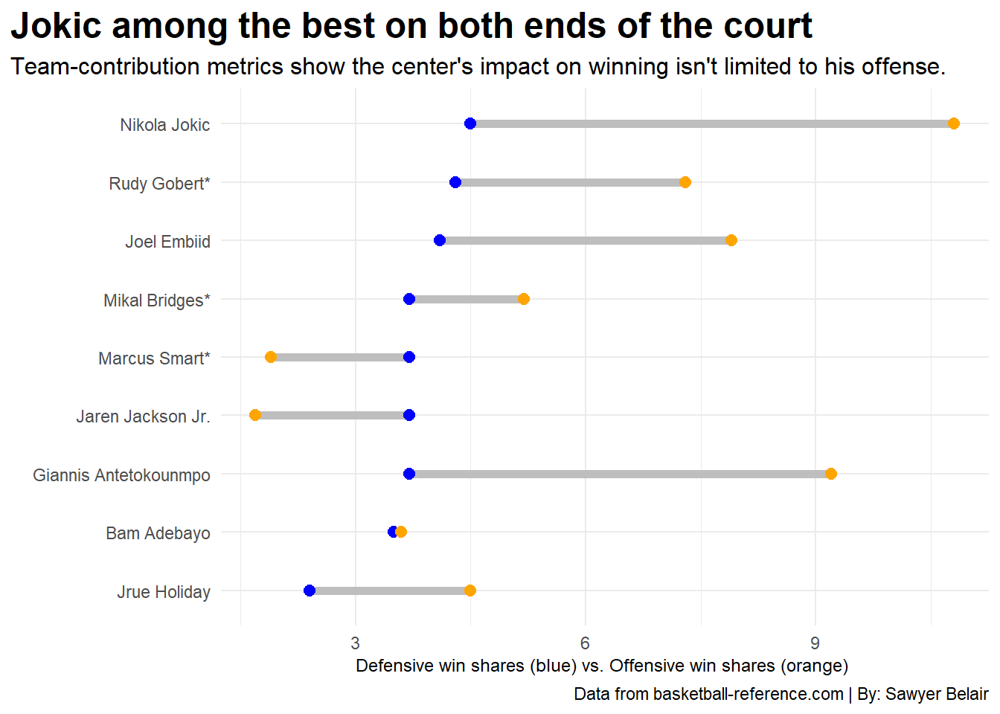

2021-22’s Nikola Jokic wasn’t just the NBA’s most valuable player, he was its best by a longshot.
basketball
nba
analysis
Author
Sawyer Belair
Published
November 4, 2022
The 2021-22 NBA season showcased the pinnacle of Nikola Jokic’s basketball abilities, but some still doubt his status as the reigning greatest player in basketball.
Indeed, when the conversation of “greatest on the planet” comes up, the narrative is continually dominated by Giannis Antetokounmpo, Steph Curry, Kevin Durant, and even LeBron James, who Jokic himself recently graced with that accolade.
Perhaps it’s a matter of fan fatigue, a byproduct of playing for a relatively small-market organization, or just the simple fact that he doesn’t possess a singular, electrifying attribute like Antetokounmpo’s freakish athletic ability or Curry’s cold-blooded deep shooting. Regardless, the center from Sombor, Serbia has been fighting tooth and nail for his place at the table with the greats since he came into the league during the latter superstar’s historic 73-9 MVP campaign.
Whether or not he bores people to death with his slow, methodical pace, or fails to be taken seriously due to his humorous, carefree demeanor, after four straight All-Star selections and back-to-back MVP seasons, during which he’s posted some of the most jaw-dropping stats in the history of the league, it’s time we put some respect on this man’s name.
We start our journey with an overview of Jokic’s overall production. utilizing some of the more common all-in-one statistics used to calculate a player’s overall per-game impact.
According to the “godfather of basketball analytics” and creator of the metric, John Hollinger, Player Efficiency Rating (PER) is a rating of a player’s per-minute productivity, factoring in their positive “box-score” contributions (i.e. baskets scored, assists, rebounds, steals, blocks) as well as negative contributions (missed shots, turnovers, fouls) to produce a number that generally ranges from 0 to 30. 15 is generally viewed as average-to-mediocre, while anything above around 23 is considered elite company.
Box Plus/Minus (BPM) is another easy-to-comprehend advanced metric that takes into account box score contributions in addition to a player’s position and the team’s overall performance to estimate a player’s contribution in points above the league average per 100 possessions played. The average BPM is defined as 0.0 (an okay starter or good 6th man), while 5.0 and above is considered elite, 8.0 is MVP level and 10.0+ is all-time great.
Taking both of these metrics into account, we plot every player in the league who played at or above the league-wide median of 43 games played (just over half of a full season), with the top 9 performers highlighted.
Code
library(tidyverse)library(ggrepel)library(cowplot)library(ggalt)advlogs <-read_csv("advancedlogs21.csv")advplayers <- advlogs %>%filter(G >=43)advelites <- advplayers%>%filter(BPM >5, PER >23)alltimeper <-read_csv("alltimeper.csv")alltimebpm <-read_csv("alltimebpm.csv")alltimersadv <- alltimebpm %>%inner_join(alltimeper, by=c("Player"))jokeradv <- advelites %>%filter(Player =="Nikola Jokic")freakadv <- advelites %>%filter(Player =="Giannis Antetokounmpo")processadv <- advelites %>%filter(Player =="Joel Embiid")kingadv <- advelites %>%filter(Player =="LeBron James")sniperadv <- advelites %>%filter(Player =="Kevin Durant")bucketsadv <- advelites %>%filter(Player =="Jimmy Butler")lukaadv <- advelites %>%filter(Player =="Luka Doncic")iceadv <- advelites %>%filter(Player =="Trae Young")jaadv <- advelites %>%filter(Player =="Ja Morant")freakalltimeadv <- alltimersadv %>%filter(Player =="Giannis Antetokounmpo (2021-22)")processalltimeadv <- alltimersadv %>%filter(Player =="Joel Embiid (2021-22)")jokeralltimeadv <- alltimersadv %>%filter(Player =="Nikola Jokic (2021-22)")chefalltimeadv <- alltimersadv %>%filter(Player =="Stephen Curry (2015-16)")kingalltimeadv <- alltimersadv %>%filter(Player =="LeBron James (2008-09)")mjalltimeadv <- alltimersadv %>%filter(Player =="Michael Jordan (1987-88)")mjalltimeadv2 <- alltimersadv %>%filter(Player =="Michael Jordan (1990-91)")kingalltimeadv2 <- alltimersadv %>%filter(Player =="LeBron James (2012-13)")freakalltimeadv2 <- alltimersadv %>%filter(Player =="Giannis Antetokounmpo (2019-20)")jokeralltimeadv2 <- alltimersadv %>%filter(Player =="Nikola Jokic (2020-21)")admiralalltimeadv <- alltimersadv %>%filter(Player =="David Robinson (1993-94)")russalltimeadv <- alltimersadv %>%filter(Player =="Russell Westbrook (2016-17)")alltimeadv <-bind_rows(chefalltimeadv, kingalltimeadv, mjalltimeadv, admiralalltimeadv, russalltimeadv, freakalltimeadv, processalltimeadv, jokeralltimeadv, mjalltimeadv2, kingalltimeadv2, freakalltimeadv2, jokeralltimeadv2)ggplot() +geom_point(data = advplayers, aes(x = BPM, y = PER), color ="grey") +geom_point(data = jokeradv, aes(x = BPM, y = PER), color ="dark blue", size =2) +geom_point(data = freakadv, aes(x = BPM, y = PER), color ="dark green", size =2) +geom_point(data = processadv, aes(x = BPM, y = PER), color ="blue", size =2) +geom_point(data = kingadv, aes(x = BPM, y = PER), color ="gold", size =2) +geom_point(data = sniperadv, aes(x = BPM, y = PER), color ="black", size =2) +geom_point(data = bucketsadv, aes(x = BPM, y = PER), color ="dark red", size =2) +geom_point(data = lukaadv, aes(x = BPM, y = PER), color ="light blue", size =2) +geom_point(data = iceadv, aes(x = BPM, y = PER), color ="yellow green", size =2) +geom_point(data = jaadv, aes(x = BPM, y = PER), color ="steel blue", size =2) +geom_text_repel(data=advelites, aes(x=BPM, y=PER, label=Player), box.padding = .5, size =3.3) +geom_encircle(data=jokeradv, aes(x=BPM, y=PER), s_shape=0, expand=.01, colour="red") +labs(title ="Among his peers, Jokic was a freakish outlier",subtitle ="2021-22 all-in-one box-score stats show an otherwordly level of production from the center.",caption ="Data from basketball-reference.com | By: Sawyer Belair" ) +labs(x ="Box Plus-Minus (BPM)", y ="Player Efficiency Rating (PER)" ) +theme_minimal() +theme(plot.title.position ="plot", ### Aligns the title to the leftplot.title =element_text(size =18, face ="bold"),axis.title =element_text(size =9), plot.subtitle =element_text(size=12), panel.grid.minor =element_blank() )
As we can see, the distribution demonstrates a tight positive correlation between the two metrics, unsurprisingly given their adjacency to one another. An off-season from Curry (aside from a championship and Finals MVP to end the year) kept him out of the league’s top echelon, and only Antetokounmpo and Joel Embiid, Jokic’s counterparts at the top of the pecking order among the league’s big men, truly gave him a run for his money.
Antetokounmpo and Jokic both posted all-time great seasons, shattering the 10.0 BPM threshold, but Jokic’s 13.7 is absolutely unfathomable, even in the context of some of the greatest seasons in the league’s history.
Code
ggplot() +geom_point(data = alltimersadv, aes(x = BPM, y = PER), color ="grey") +geom_point(data = jokeralltimeadv, aes(x = BPM, y = PER), color ="dark blue", size =2) +geom_point(data = freakalltimeadv, aes(x = BPM, y = PER), color ="dark green", size =2) +geom_point(data = chefalltimeadv, aes(x = BPM, y = PER), color ="gold", size =2) +geom_point(data = kingalltimeadv, aes(x = BPM, y = PER), color ="maroon", size =2) +geom_point(data = mjalltimeadv, aes(x = BPM, y = PER), color ="red", size =2) +geom_point(data = admiralalltimeadv, aes(x = BPM, y = PER), color ="black", size =2) +geom_point(data = russalltimeadv, aes(x = BPM, y = PER), color ="orange", size =2) +geom_point(data = mjalltimeadv2, aes(x = BPM, y = PER), color ="red", size =2) +geom_point(data = kingalltimeadv2, aes(x = BPM, y = PER), color ="maroon", size =2) +geom_point(data = freakalltimeadv2, aes(x = BPM, y = PER), color ="dark green", size =2) +geom_point(data = jokeralltimeadv2, aes(x = BPM, y = PER), color ="dark blue", size =2) +geom_text_repel(data = alltimeadv, aes(x=BPM, y=PER, label = Player), box.padding = .6, size =3.3) +geom_encircle(data=jokeralltimeadv, aes(x=BPM, y=PER), s_shape=0, expand=.01, colour="red") +labs(title ="A historically productive season",subtitle ="Even amongst the greatest individual seasons on record, Jokic stands alone.",caption ="Data from basketball-reference.com | By: Sawyer Belair") +theme_minimal() +theme(plot.title.position ="plot",plot.title =element_text(size =18, face ="bold"),axis.title =element_text(size =9), plot.subtitle =element_text(size=12), panel.grid.minor =element_blank() )
Even at their respective peaks, Michael Jordan and LeBron James, the presumptive “greatest players of all-time” who are subject to endless and often fruitless debates over who is better than the other, never even sniffed the level of productivity Jokic turned in last season. Nor did Curry during the aforementioned 73-win 2015-16 season that was also Jokic’s first in the league, coming in as a relative unknown after infamously being drafted 41st overall during a Taco Bell commercial.
I’ll repeat that again, the man who just won back-to-back MVPs and left MJ and LeBron in the dust was just half a decade ago drafted off-screen during a Taco Bell commercial!!
Moving on, we take a look at Jokic’s shot-selection relative to his modern-day peers. While much is said about his virtuoso passing ability, especially for a player of his size, perhaps the most crippling aspect of the Joker’s game is his ability to score at will no matter where he is on the court.
Comparing him again to the other top 8 players in PER and BPM last season, we see that while Jokic owns the space from 3-to-10 feet from the basket that is so often overlooked in the modern NBA, he’s also converting his shots at an unprecedented rate from everywhere else as well.
In terms of raw efficiency across the court, Jokic’s only contemporary is Kevin Durant, who is often described as the league’s greatest scorer for his ability to drop the ball in the hoop from anywhere at anytime. Although the two play at considerably different levels of pace, the exact same can be said of Jokic.
One aspect that Jokic isn’t given enough credit for, but which almost certainly factored into him winning a second-straight MVP award, is his effort on the defensive end. Much has been said in the past about the two-time MVP’s ineffectiveness with his back to the basket, but his defensive improvement his year has been absolutely astounding.
Defensive performance is notoriously difficult to quantify in basketball, with the metrics capable of doing so often difficult for the casual fan to comprehend (although Jokic excels in many of them, such as RAPTOR). While it’s far from a perfect statistic, win shares are a relatively easy-to-understand metric that, quite simply, calculate how many wins a player can be credited with adding to a team’s season.
Listed below are the top defenders from the 2021-22 season, with the 3 finalists for Defensive Player of the Year marked with an asterisk(*).
Code
winshares <-read_csv("winshares.csv")ggplot() +geom_dumbbell(data = winshares, aes(y =reorder(Player, DWS), x = DWS, xend = OWS),size =2, colour ="grey",colour_x ="blue",colour_xend ="orange") +labs(title ="Jokic among the best on both ends of the court",subtitle ="Team-contribution metrics show the center's impact on winning isn't limited to his offense.",caption ="Data from basketball-reference.com | By: Sawyer Belair",x ="Defensive win shares (blue) vs. Offensive win shares (orange) ", y ="" ) +theme_minimal() +theme(plot.title.position ="plot", ### Aligns the title to the leftplot.title =element_text(size =18, face ="bold"),axis.title =element_text(size =9), plot.subtitle =element_text(size=12) )

Despite anchoring a 15th-ranked defense that boasted an elite-level defensive rating of 103.7 with him on the floor and a league-worst 114.8 with him on the bench, in addition to tallying a league-best 4.5 Defensive Win Shares (DWS), Jokic is rarely credited with shouldering the burden on defense, unlike his fellow MVP finalists in Embiid and Antetokounmpo.
The latter two also produced significantly on the offensive end of the floor, but one can’t help but wonder if Jokic’s own unfathomable level of offensive production (further evidenced by his league-best 10.8 Offensive Win Shares), in conjunction with his pasty complexion and stocky frame, has served to distract from his legitimate dominance on defense.
Nonetheless, the quandary of Jokic’s underrated defense is simply further evidence of a broader truth; since the moment he set foot in the league, he has been subject to dismissal on the basis of surface-level evaluations. Nonetheless, at 284 lbs and 6’11”, Nikola Jokic takes the ball down the court and runs the offense like a point guard. Despite being a slow, lumbering giant, he’s able to score over anyone, anytime, anywhere on the floor. While a carefree jokester at heart with a knack for unconventional thinking, he’s also a tough-as-nails bruiser, battling night in and night out for the simple love of the game.
Jokic is a man who thrives on being underestimated, and making people pay for doing so.
And so, the bottom line: dismiss the greatness of Nikola Jokic at your own peril. He’ll just keep proving you wrong anyway.